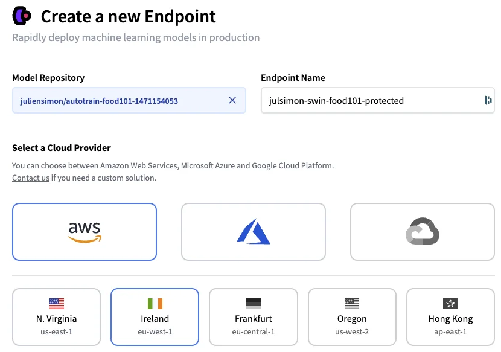
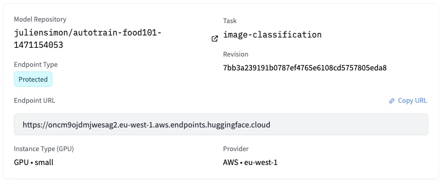
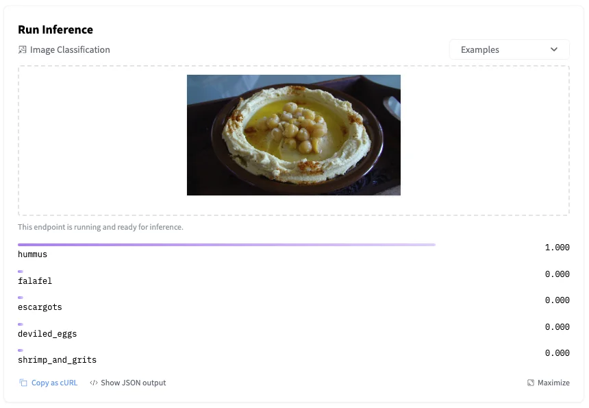
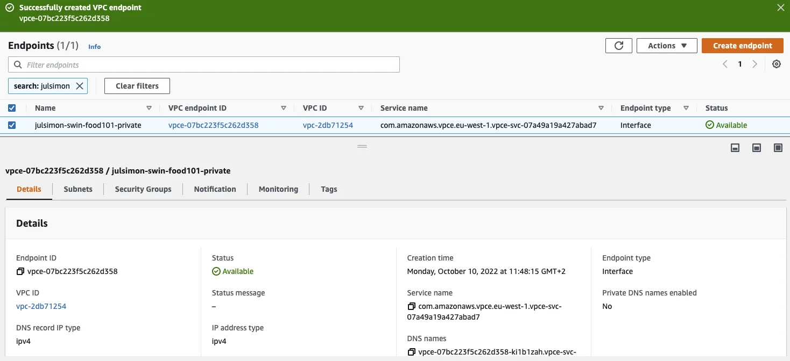

Published: 2022-10-14
Originally published at https://huggingface.co/blog/inference-endpoints
Training machine learning models has become quite simple, especially with the rise of pre-trained models and transfer learning. OK, sometimes it's not that simple, but at least, training models will never break critical applications, and make customers unhappy about your quality of service. Deploying models, however... Yes, we've all been there.
Deploying models in production usually requires jumping through a series of hoops. Packaging your model in a container, provisioning the infrastructure, creating your prediction API, securing it, scaling it, monitoring it, and more. Let's face it: building all this plumbing takes valuable time away from doing actual machine learning work. Unfortunately, it can also go awfully wrong.
We strive to fix this problem with the newly launched Hugging Face Inference Endpoints . In the spirit of making machine learning ever simpler without compromising on state-of-the-art quality, we've built a service that lets you deploy machine learning models directly from the Hugging Face hub to managed infrastructure on your favorite cloud in just a few clicks. Simple, secure, and scalable: you can have it all.
Let me show you how this works!
Looking at the list of tasks that Inference Endpoints support, I decided to deploy a Swin image classification model that I recently fine-tuned with AutoTrain on the food101 dataset. If you're interested in how I built this model, this video will show you the whole process.
Starting from my
model page
, I click on
Deploy
and select
Inference Endpoints
.
This takes me directly to the endpoint creation page.

I decide to deploy the latest revision of my model on a single GPU instance, hosted on AWS in the
eu-west-1
region. Optionally, I could set up autoscaling, and I could even deploy the model in a
custom container
.
Next, I need to decide who can access my endpoint. From least secure to most secure, the three options are:
Let's first deploy a protected endpoint, and then we'll deploy a private one.
I simply select
Protected
and click on
Create Endpoint
.
After a few minutes, the endpoint is up and running, and its URL is visible.
I can immediately test it by uploading an image in the inference widget.
Of course, I can also invoke the endpoint directly with a few lines of Python code, and I authenticate with my Hugging Face API token (you'll find yours in your account settings on the hub).
import requests, json
API_URL = "https://oncm9ojdmjwesag2.eu-west-1.aws.endpoints.huggingface.cloud"
headers = {
"Authorization": "Bearer MY_API_TOKEN",
"Content-Type": "image/jpg"
}
def query(filename):
with open(filename, "rb") as f:
data = f.read()
response = requests.request("POST", API_URL, headers=headers, data=data)
return json.loads(response.content.decode("utf-8"))
output = query("food.jpg")
As you would expect, the predicted result is identical.
[{'score': 0.9998438358306885, 'label': 'hummus'},
{'score': 6.674625183222815e-05, 'label': 'falafel'},
{'score': 6.490697160188574e-06, 'label': 'escargots'},
{'score': 5.776922080258373e-06, 'label': 'deviled_eggs'},
{'score': 5.492902801051969e-06, 'label': 'shrimp_and_grits'}]
Moving to the
Analytics
tab, I can see endpoint metrics. Some of my requests failed because I deliberately omitted the
Content-Type
header.
For additional details, I can check the full logs in the
Logs
tab.
5c7fbb4485cd8w7 2022-10-10T08:19:04.915Z 2022-10-10 08:19:04,915 | INFO | POST / | Duration: 142.76 ms
5c7fbb4485cd8w7 2022-10-10T08:19:05.860Z 2022-10-10 08:19:05,860 | INFO | POST / | Duration: 148.06 ms
5c7fbb4485cd8w7 2022-10-10T09:21:39.251Z 2022-10-10 09:21:39,250 | ERROR | Content type "None" not supported. Supported content types are: application/json, text/csv, text/plain, image/png, image/jpeg, image/jpg, image/tiff, image/bmp, image/gif, image/webp, image/x-image, audio/x-flac, audio/flac, audio/mpeg, audio/wave, audio/wav, audio/x-wav, audio/ogg, audio/x-audio, audio/webm, audio/webm;codecs=opus
5c7fbb4485cd8w7 2022-10-10T09:21:44.114Z 2022-10-10 09:21:44,114 | ERROR | Content type "None" not supported. Supported content types are: application/json, text/csv, text/plain, image/png, image/jpeg, image/jpg, image/tiff, image/bmp, image/gif, image/webp, image/x-image, audio/x-flac, audio/flac, audio/mpeg, audio/wave, audio/wav, audio/x-wav, audio/ogg, audio/x-audio, audio/webm, audio/webm;codecs=opus
Now, let's increase our security level and deploy a private endpoint.
Repeating the steps above, I select
Private
this time.
This opens a new box asking me for the identifier of the AWS account in which the endpoint will be visible. I enter the appropriate ID and click on
Create Endpoint
.
Not sure about your AWS account id? Here's an AWS CLI one-liner for you:
aws sts get-caller-identity --query Account --output text
After a few minutes, the Inference Endpoints user interface displays the name of the VPC service name. Mine is
com.amazonaws.vpce.eu-west-1.vpce-svc-07a49a19a427abad7
.
Next, I open the AWS console and go to the
VPC Endpoints
page. Then, I click on
Create endpoint
to create a VPC endpoint, which will enable my AWS account to access my Inference Endpoint through AWS PrivateLink.
In a nutshell, I need to fill in the name of the VPC service name displayed above, select the VPC and subnets(s) allowed to access the endpoint, and attach an appropriate Security Group. Nothing scary: I just follow the steps listed in the Inference Endpoints documentation .
Once I've created the VPC endpoint, my setup looks like this.
Returning to the Inference Endpoints user interface, the private endpoint runs a minute or two later. Let's test it!
Launching an Amazon EC2 instance in one of the subnets allowed to access the VPC endpoint, I use the inference endpoint URL to predict my test image.
curl https://oncm9ojdmjwesag2.eu-west-1.aws.endpoints.huggingface.cloud \
-X POST --data-binary '@food.jpg' \
-H "Authorization: Bearer MY_API_TOKEN" \
-H "Content-Type: image/jpeg"
[{"score":0.9998466968536377, "label":"hummus"},
{"score":0.00006414744711946696, "label":"falafel"},
{"score":6.4065129663504194e-6, "label":"escargots"},
{"score":5.819705165777123e-6, "label":"deviled_eggs"},
{"score":5.532585873879725e-6, "label":"shrimp_and_grits"}]
This is all there is to it. Once I'm done testing, I delete the endpoints that I've created to avoid unwanted charges. I also delete the VPC Endpoint in the AWS console.
Hugging Face customers are already using Inference Endpoints. For example, Phamily , the #1 in-house chronic care management & proactive care platform, told us that Inference Endpoints is helping them simplify and accelerate HIPAA-compliant Transformer deployments.
Thanks to Inference Endpoints, you can deploy production-grade, scalable, secure endpoints in minutes, in just a few clicks. Why don't you give it a try ?
We have plenty of ideas to make the service even better, and we'd love to hear your feedback in the Hugging Face forum .
Thank you for reading and have fun with Inference Endpoints!
Julien Simon is the Chief Evangelist at Hugging Face , where he focuses on democratizing AI and making transformers accessible to everyone. A leading voice in open-source AI and small language models, he helps developers and enterprises bring their AI ideas to life. In his spare time, he reads the works of JRR Tolkien again and again.
{kind=link}